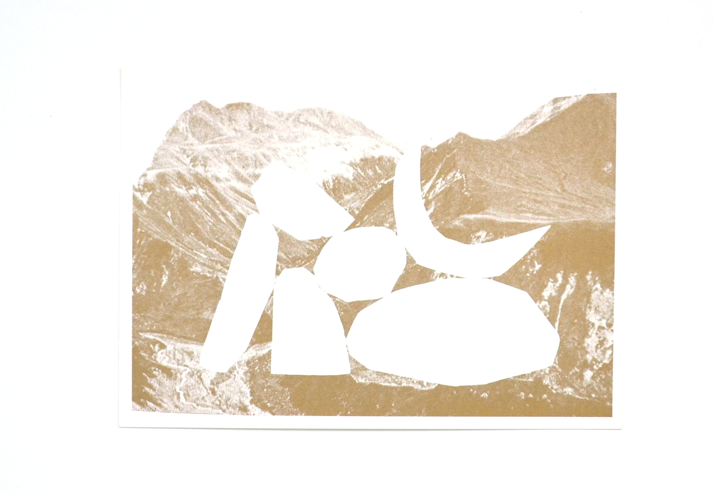
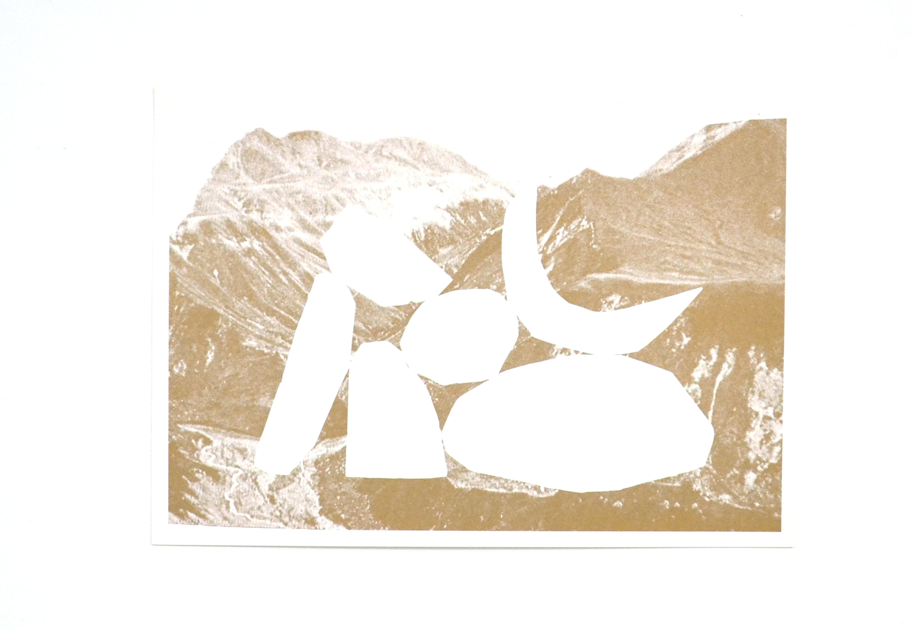
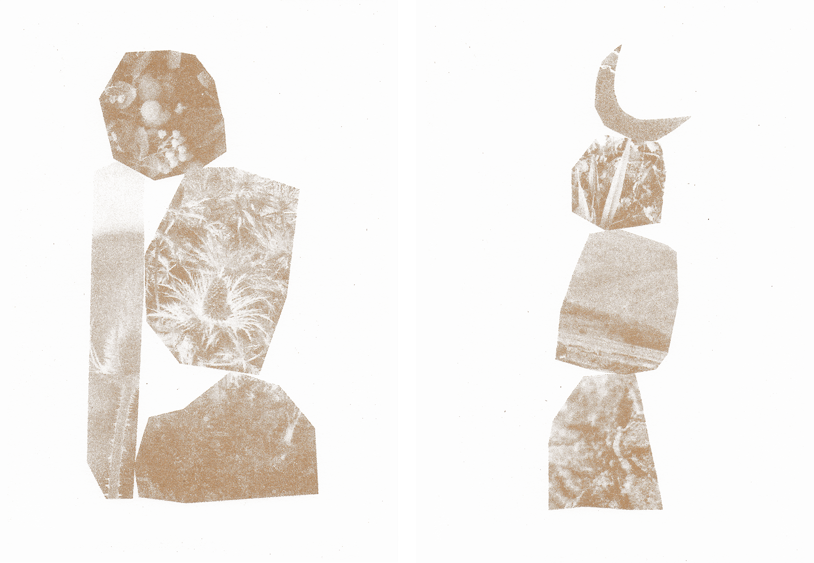
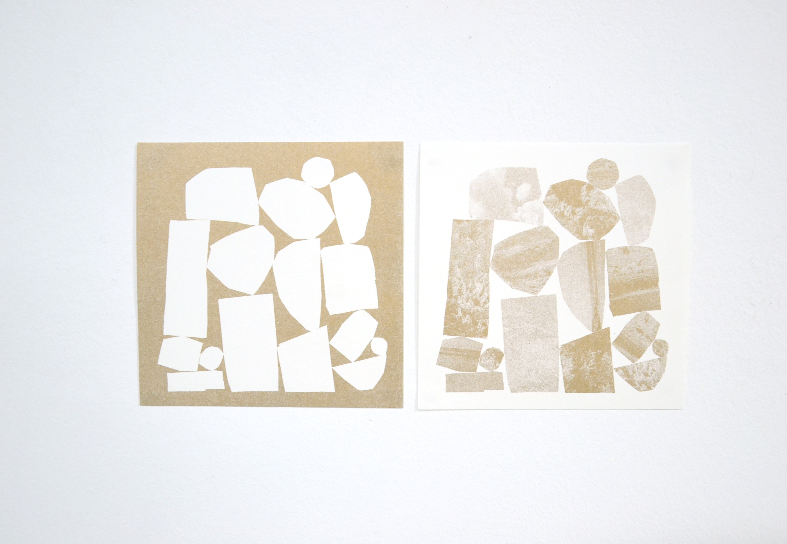
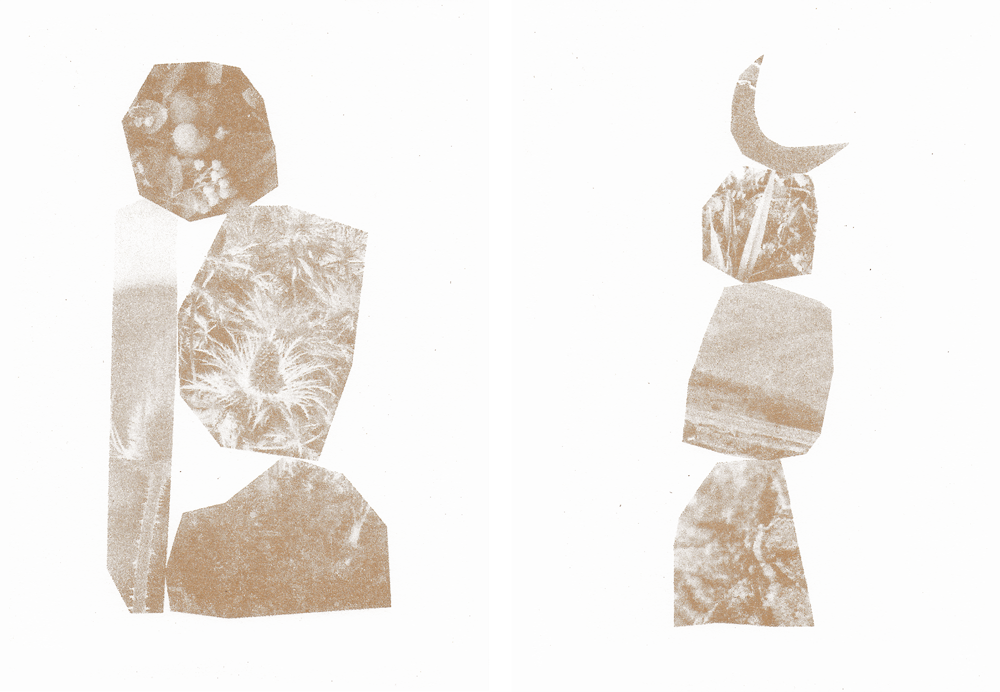
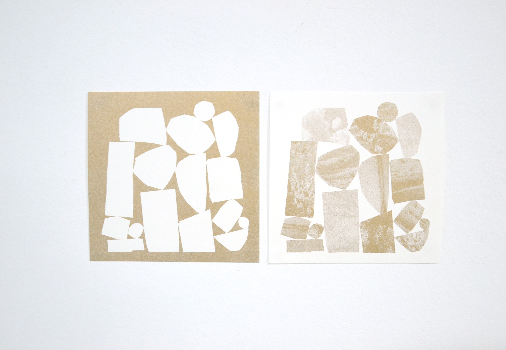

Les mémoires sédimentaires
Que faire de nos mémoires qui se forment par sédimentation à l’intérieur de nos corps ? Je plonge à la rencontre de ces vestiges et y construis des cairns : des repères qui nous orientent le long des sentiers.
• "Sédiments", 2021, photographies, série de 8 collages, tirage en risographie 1 couleur, 10 exemplaires, visible chez Maison Makeba, 20 x 30 cm
• "Atlas", 2021, photographie, tirage en risographie 1 couleur, 30 exemplaires, 30 x 42 cm
• "Édifice", 2020, photographie, série de 2 collages
• "Monolithe", 2021, photographies, visible chez Maison Makeba, 40 x 60 cm
 


 


